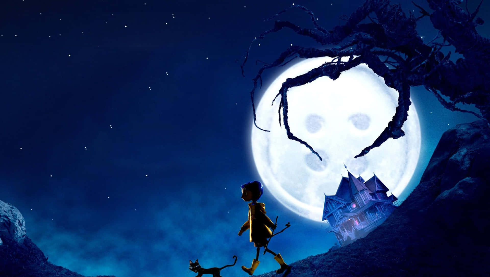
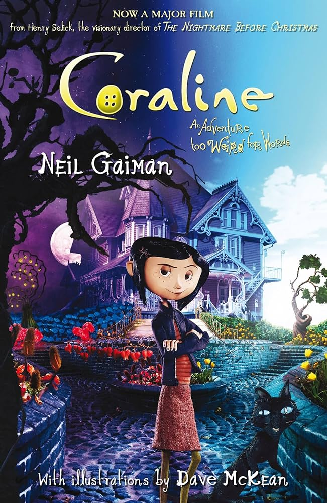
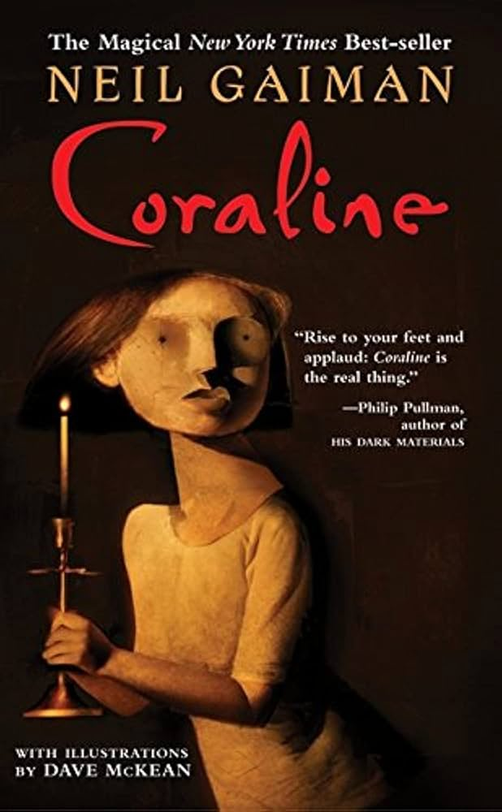

A obra é descrita como sombria, assustadora e com elementos de horror. Aborda temas como a valorização do que se tem, a coragem diante do medo, amadurecimento e a importância da atenção familiar.


Poster e capa da obra de Coraline